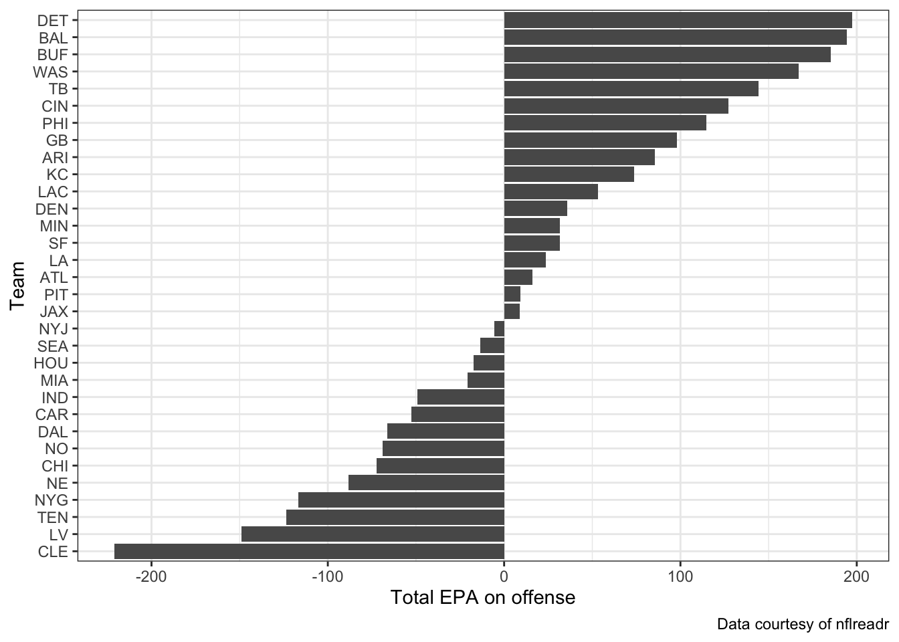
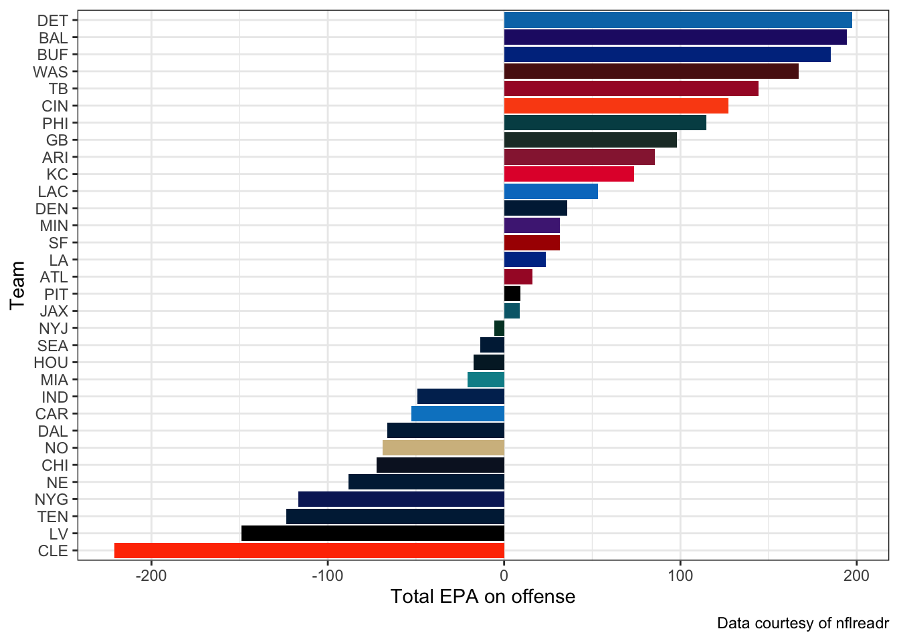
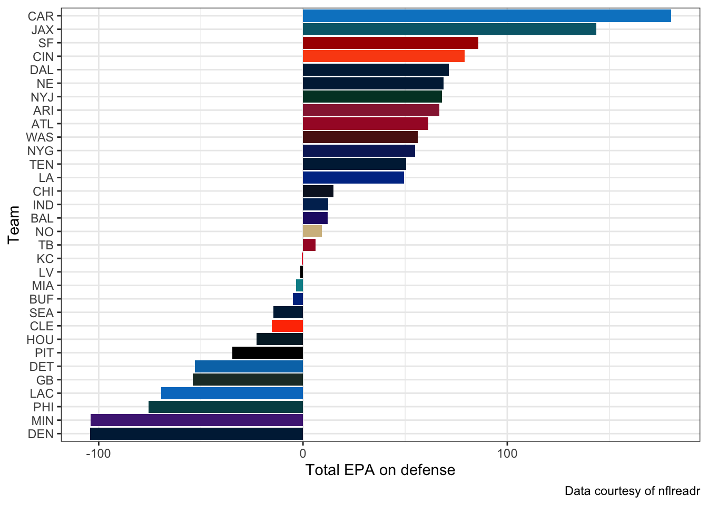
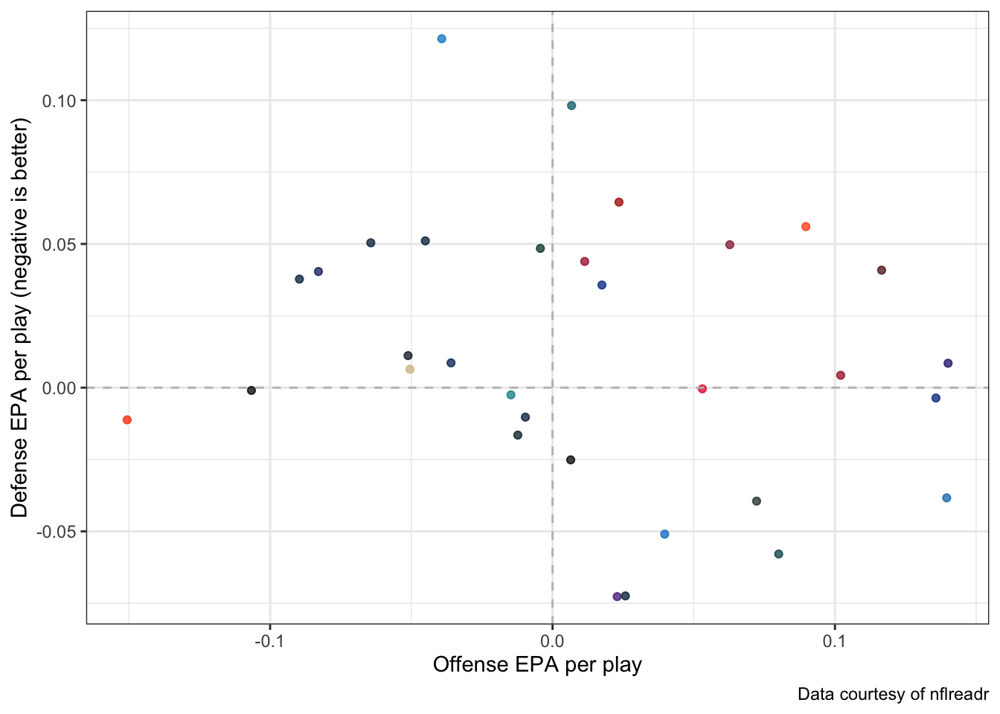
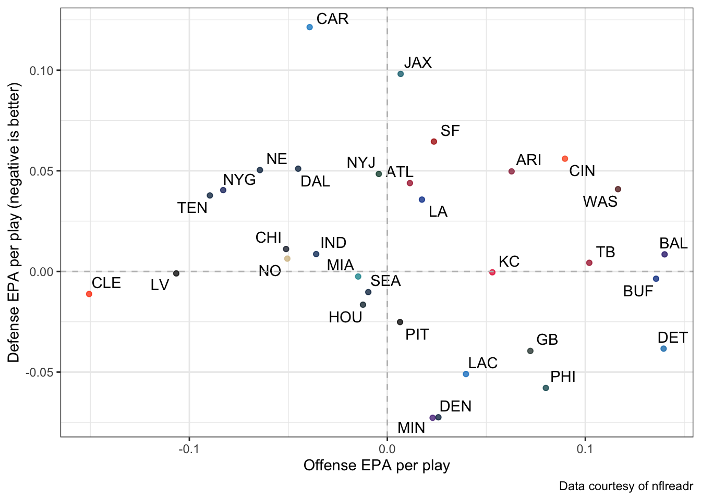
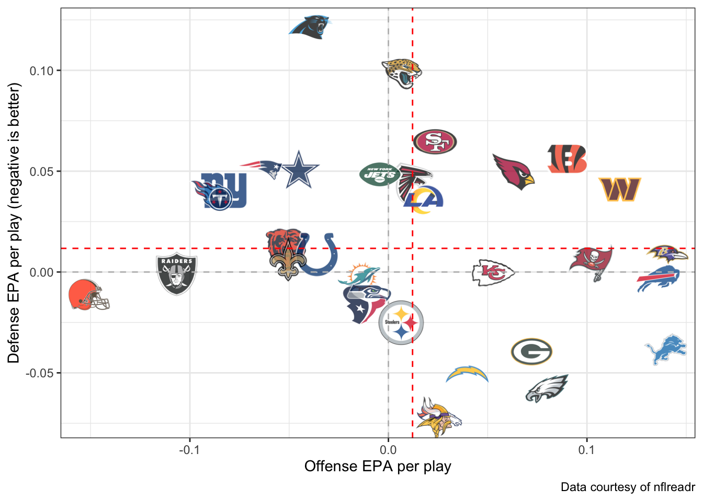
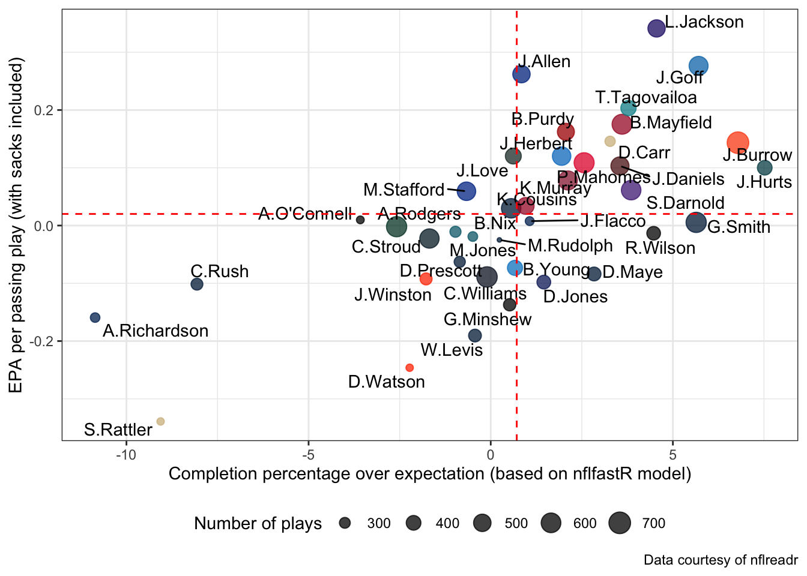

The goal of this demo is to introduce you to basic ways of summarizing and visualizing football statistics based on expected points added (EPA), as measured by nflfastR. Instead of manually computing EPA based on your own EP estimates, we’ll just use the nflfastR values since: (1) they’re extremely popular and (2) the code to compute EPA is really annoying to write (it’s a sloppy situation of ifelse/case_when situations). The code that follows in this demo borrows heavily from the nflfastR beginner’s guide.
You will need the following packages installed (besides the tidyverse):
For context, both nflreadr and nflplotR are packages inside the nflverse.
Reading in NFL play-by-play data
We’ll start by reading in the play-by-play data from NFL games during the 2024 regular season. Since we are interested in creating statistics based on EPA, we will only consider rows in the dataset where epa is not missing:. The code chunk below reads in the data using nflreadr. You’ll notice that the play-by-play data contains a large number of columns with various statistics and other measurements provided by nflfastR. You can find a full glossary of the columns here.
library(tidyverse)library(nflreadr)# Load the 2024 data:nfl_2024_pbp <-load_pbp(2024) |># Only use games from the regular seasonfilter(season_type =="REG", # and where epa is not missing along with other issues for the # teams involved either offense (posteam) or defense (defteam)!is.na(epa), !is.na(posteam), posteam !="",!is.na(defteam), defteam !="")# Preview the datanfl_2024_pbp
# A tibble: 44,414 × 372
play_id game_id old_game_id home_team away_team season_type week posteam
<dbl> <chr> <chr> <chr> <chr> <chr> <int> <chr>
1 40 2024_01_AR… 2024090801 BUF ARI REG 1 ARI
2 61 2024_01_AR… 2024090801 BUF ARI REG 1 ARI
3 83 2024_01_AR… 2024090801 BUF ARI REG 1 ARI
4 108 2024_01_AR… 2024090801 BUF ARI REG 1 ARI
5 133 2024_01_AR… 2024090801 BUF ARI REG 1 ARI
6 155 2024_01_AR… 2024090801 BUF ARI REG 1 ARI
7 177 2024_01_AR… 2024090801 BUF ARI REG 1 ARI
8 199 2024_01_AR… 2024090801 BUF ARI REG 1 ARI
9 224 2024_01_AR… 2024090801 BUF ARI REG 1 ARI
10 265 2024_01_AR… 2024090801 BUF ARI REG 1 ARI
# ℹ 44,404 more rows
# ℹ 364 more variables: posteam_type <chr>, defteam <chr>, side_of_field <chr>,
# yardline_100 <dbl>, game_date <chr>, quarter_seconds_remaining <dbl>,
# half_seconds_remaining <dbl>, game_seconds_remaining <dbl>,
# game_half <chr>, quarter_end <dbl>, drive <dbl>, sp <dbl>, qtr <dbl>,
# down <dbl>, goal_to_go <int>, time <chr>, yrdln <chr>, ydstogo <dbl>,
# ydsnet <dbl>, desc <chr>, play_type <chr>, yards_gained <dbl>, …
Summarizing and Visualizing Total EPA
With this dataset, we’re now ready to actually compute various EPA-related statistics to measure team performance. The following code chunk computes the total EPA (i.e., sum of EPA), EPA per play, and success rate for each team when they are on offense:
# A tibble: 32 × 4
posteam total_epa ave_epa success_rate
<chr> <dbl> <dbl> <dbl>
1 ARI 85.6 0.0628 0.508
2 ATL 16.1 0.0114 0.502
3 BAL 195. 0.140 0.514
4 BUF 185. 0.136 0.5
5 CAR -52.8 -0.0392 0.460
6 CHI -72.5 -0.0512 0.434
7 CIN 127. 0.0897 0.508
8 CLE -221. -0.151 0.406
9 DAL -66.3 -0.0450 0.452
10 DEN 35.7 0.0258 0.470
# ℹ 22 more rows
Next, we can display a ranking of the teams based on the total EPA via a bar chart ordered by the total EPA. For cosmetics, I flip the x/y axes here to display the bars horizontally, making the team abbreviations easier to see along the left-hand side. Note the use of reorder() to reorder the teams by their total_epa.
team_off_summary |>ggplot(aes(x =reorder(posteam, total_epa), y = total_epa)) +geom_bar(stat ="identity") +labs(x ="Team", y ="Total EPA on offense",caption ="Data courtesy of nflreadr") +coord_flip() +theme_bw()

NOTE: From looking at this visual, we observe symmetry in terms of team with positive and negative total EPA. If we observed an imbalance, with favoring of one direction over another, then I would be concerned about the EPA values. Such type of asymmetry may be due to changes in the scoring environment for a particular season relative to previous seasons in the expected points model’s training dataset.
We can easily change the bar colors to match each team’s respective color(s) by loading in team data via load_teams() from nflreadr:
team_data <-load_teams()team_data
── nflverse team graphics ──────────────────────────────────────────────────────
ℹ Data updated: 2025-01-27 16:36:39 EST
# A tibble: 32 × 16
team_abbr team_name team_id team_nick team_conf team_division team_color
<chr> <chr> <chr> <chr> <chr> <chr> <chr>
1 ARI Arizona Cardi… 3800 Cardinals NFC NFC West #97233F
2 ATL Atlanta Falco… 0200 Falcons NFC NFC South #A71930
3 BAL Baltimore Rav… 0325 Ravens AFC AFC North #241773
4 BUF Buffalo Bills 0610 Bills AFC AFC East #00338D
5 CAR Carolina Pant… 0750 Panthers NFC NFC South #0085CA
6 CHI Chicago Bears 0810 Bears NFC NFC North #0B162A
7 CIN Cincinnati Be… 0920 Bengals AFC AFC North #FB4F14
8 CLE Cleveland Bro… 1050 Browns AFC AFC North #FF3C00
9 DAL Dallas Cowboys 1200 Cowboys NFC NFC East #002244
10 DEN Denver Broncos 1400 Broncos AFC AFC West #002244
# ℹ 22 more rows
# ℹ 9 more variables: team_color2 <chr>, team_color3 <chr>, team_color4 <chr>,
# team_logo_wikipedia <chr>, team_logo_espn <chr>, team_wordmark <chr>,
# team_conference_logo <chr>, team_league_logo <chr>, team_logo_squared <chr>
To add the colors to our figure, we can join the team_color to our summary table:
And then recreate our bar chart using these colors:
team_off_summary |>ggplot(aes(x =reorder(posteam, total_epa), y = total_epa)) +geom_bar(stat ="identity",# Note this is one way to set color without mapping inside aes# that avoids a legend, it's convenient for using many colors with# potential repeats like we have with teamsfill = team_off_summary$team_color) +labs(x ="Team", y ="Total EPA on offense",caption ="Data courtesy of nflreadr") +coord_flip() +theme_bw()

We can repeat the same steps from a defensive perspective as well, by first creating the defense summary:
team_def_summary <- nfl_2024_pbp |>group_by(defteam) |>summarize(total_epa =sum(epa),ave_epa =mean(epa),# Flip success rate to be negativesuccess_rate =mean(as.numeric(epa <0)),.groups ="drop")team_def_summary
# A tibble: 32 × 4
defteam total_epa ave_epa success_rate
<chr> <dbl> <dbl> <dbl>
1 ARI 66.8 0.0497 0.474
2 ATL 61.3 0.0439 0.490
3 BAL 12.1 0.00849 0.523
4 BUF -4.98 -0.00361 0.504
5 CAR 180. 0.121 0.458
6 CHI 14.8 0.0111 0.506
7 CIN 79.1 0.0560 0.483
8 CLE -15.3 -0.0112 0.543
9 DAL 71.3 0.0511 0.495
10 DEN -104. -0.0725 0.533
# ℹ 22 more rows
And create the appropriate visualization for defense where negative values are better:
team_def_summary |>ggplot(aes(x =reorder(defteam, total_epa), y = total_epa)) +geom_bar(stat ="identity",fill = team_def_summary$team_color) +labs(x ="Team", y ="Total EPA on defense",caption ="Data courtesy of nflreadr") +coord_flip() +theme_bw()

Visualizing offense and defense performance together
We can also visualize the offense and defensive performance for teams simultaneously with scatterplots. However, the first step is to merge the two tables together. There are a variety of ways to do this, but the simplest in this case is to first rename the columns in each table and join based on the team abbreviation columns:
# First rename the team offense columns:team_off_summary <- team_off_summary |>rename(team = posteam, off_total_epa = total_epa,off_ave_epa = ave_epa,off_success_rate = success_rate)# Repeat for defense:team_def_summary <- team_def_summary |>rename(team = defteam, def_total_epa = total_epa,def_ave_epa = ave_epa,def_success_rate = success_rate)# And join together (dropping the team_color in the defense table):team_summary <- team_off_summary |>inner_join(dplyr::select(team_def_summary, -team_color),by ="team")team_summary
Next, using this dataset we can make a scatterplot of EPA per play with the color for each team:
team_summary |>ggplot(aes(x = off_ave_epa, y = def_ave_epa)) +geom_point(color = team_summary$team_color,alpha =0.75) +# Add reference lines at 0:geom_hline(yintercept =0, linetype ="dashed", color ="gray") +geom_vline(xintercept =0, linetype ="dashed", color ="gray") +labs(x ="Offense EPA per play",y ="Defense EPA per play (negative is better)",caption ="Data courtesy of nflreadr") +theme_bw()

Of course this visual makes it difficult to know what point corresponds to each team. We can add text labels to the points using ggrepel and geom_text_repel:
library(ggrepel)
Warning: package 'ggrepel' was built under R version 4.2.3
team_summary |>ggplot(aes(x = off_ave_epa, y = def_ave_epa)) +geom_point(color = team_summary$team_color,alpha =0.75) +geom_text_repel(aes(label = team)) +# Add reference lines at 0:geom_hline(yintercept =0, linetype ="dashed", color ="gray") +geom_vline(xintercept =0, linetype ="dashed", color ="gray") +labs(x ="Offense EPA per play",y ="Defense EPA per play (negative is better)",caption ="Data courtesy of nflreadr") +theme_bw()

This is fairly easy to read, but thanks to nflplotR we can replace the points and team abbreviations with images of the team logos instead. As a word of caution, using the team logos may not be optimal all the time since their size can lead to overlap making it difficult to see what is directly going on. But using geom_nfl_logos() we can display the team logos instead of points, along with adjustments for the transparency and size of the logos. Furthermore, nflplotR includes a useful geom_mean_lines() function to display the averages for the x and y aesthetics via red dashed lines (although you can customize them). The following code chunk shows how you can make such a figure:
library(nflplotR)
Warning: package 'nflplotR' was built under R version 4.2.3
team_summary |>ggplot(aes(x = off_ave_epa, y = def_ave_epa)) +# Add the logo geom layer:geom_nfl_logos(aes(team_abbr = team), width =0.075, alpha =0.75) +# Add mean lines:geom_mean_lines(aes(x0 = off_ave_epa, y0 = def_ave_epa)) +# Add reference lines at 0:geom_hline(yintercept =0, linetype ="dashed", color ="gray") +geom_vline(xintercept =0, linetype ="dashed", color ="gray") +labs(x ="Offense EPA per play",y ="Defense EPA per play (negative is better)",caption ="Data courtesy of nflreadr") +theme_bw()

Summarizing and visualizing QB performance
As the last example in this demo, we’ll consider naive player evaluation based on measures of QB performance on passing plays. The following code first finds the passing plays, and then computes similar EPA-based statistics as before but at the passer-level instead of team-level. Additionally, we’ll compute completion percentage over expectation (CPOE) based on the nflfastr model for completion probability where cpoe is simply complete_pass - cp (complete_pass is a binary indicator for whether or not the pass is complete and cp is the predicted probability of a complete pass).
passer_summary <- nfl_2024_pbp |>filter(play_type =="pass") |># group by the passer play name and id columns:group_by(passer_player_name, passer_player_id) |># Now summarize (also storing the last team they were on)summarize(team =last(posteam),n_plays =n(),ave_epa =mean(epa),success_rate =mean(epa >0),cpoe =mean(cpoe, na.rm =TRUE),.groups ="drop") |># Join the team colors with left_joinleft_join(dplyr::select(team_data, team_abbr, team_color),by =c("team"="team_abbr"))passer_summary
# A tibble: 110 × 8
passer_player_name passer_player_id team n_plays ave_epa success_rate
<chr> <chr> <chr> <int> <dbl> <dbl>
1 A.Cole 00-0035190 LV 1 4.33 1
2 A.Dalton 00-0027973 CAR 168 -0.151 0.411
3 A.Lazard 00-0034521 NYJ 1 -1.01 0
4 A.Mitchell 00-0039890 IND 1 2.45 1
5 A.O'Connell 00-0038579 LV 254 0.00981 0.441
6 A.Richardson 00-0039164 IND 277 -0.159 0.347
7 A.Rodgers 00-0023459 NYJ 627 -0.00202 0.434
8 A.St. Brown 00-0036963 DET 1 1.72 1
9 B.Allen 00-0032434 SF 32 -0.546 0.344
10 B.Anger 00-0029692 DAL 2 -2.84 0
# ℹ 100 more rows
# ℹ 2 more variables: cpoe <dbl>, team_color <chr>
We can now visualize the CPOE and EPA per passing play (including sacks) for QBs during the 2024 season (with an arbitrary threshold of at least 200 plays for ease):
passer_summary |>filter(n_plays >=200) |>ggplot(aes(x = cpoe, y = ave_epa)) +# Note the filter within here could have been avoided if I just filtered# beforehand to store a separate dataset entirely:geom_point(color =pull(filter(passer_summary, n_plays >=200), team_color),aes(size = n_plays),alpha =0.75) +geom_text_repel(aes(label = passer_player_name)) +# Add mean linesgeom_mean_lines(aes(x0 = cpoe, y0 = ave_epa)) +labs(x ="Completion percentage over expectation (based on nflfastR model)",y ="EPA per passing play (with sacks included)",caption ="Data courtesy of nflreadr",size ="Number of plays") +theme_bw() +theme(legend.position ="bottom")
Warning: ggrepel: 1 unlabeled data points (too many overlaps). Consider
increasing max.overlaps

While this plot probably passes the “eye test” (i.e., it generally agrees with who we think are good vs bad players), it’s an oversimplification to assign all EPA or CPOE credit to an individual player! We’ll focus on CPOE for the next so many lectures in approaching this topic of properly allocating residuals.
Additional Resources
If you’re interested in American football data, there are several great resources readily available for you to access:
nflverse is your one-stop shop for all things NFL data in R. There’s a great function within nflreadr called load_ftn_charting() that provides a variety of additional context (e.g., is it a screen pass, play-action pass, etc.) based on manual charting courtesy of FTNData.com.
nfl_data_py is the Python equivalent that is just a wrapper for nflfastR data.
Open Source Football - a cool website that is effectively a repository of work people have done with public football data, including code. Note that there are likely mistakes made in the various posts regarding modeling techniques, but you’ll find ways to access interesting datasets and potentially get ideas for projects.
A useful coding book with interesting examples: https://bradcongelio.com/nfl-analytics-with-r-book/ (note that I do not recommend the modeling sections of the book since many important details are omitted).
cfbfastR for college football data (including recruiting data!).